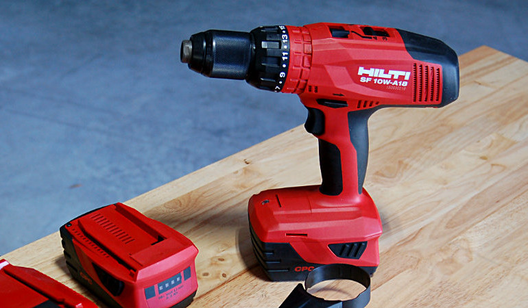
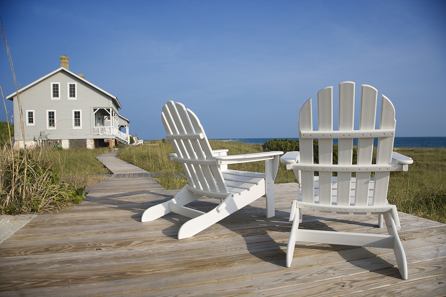
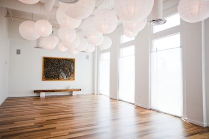
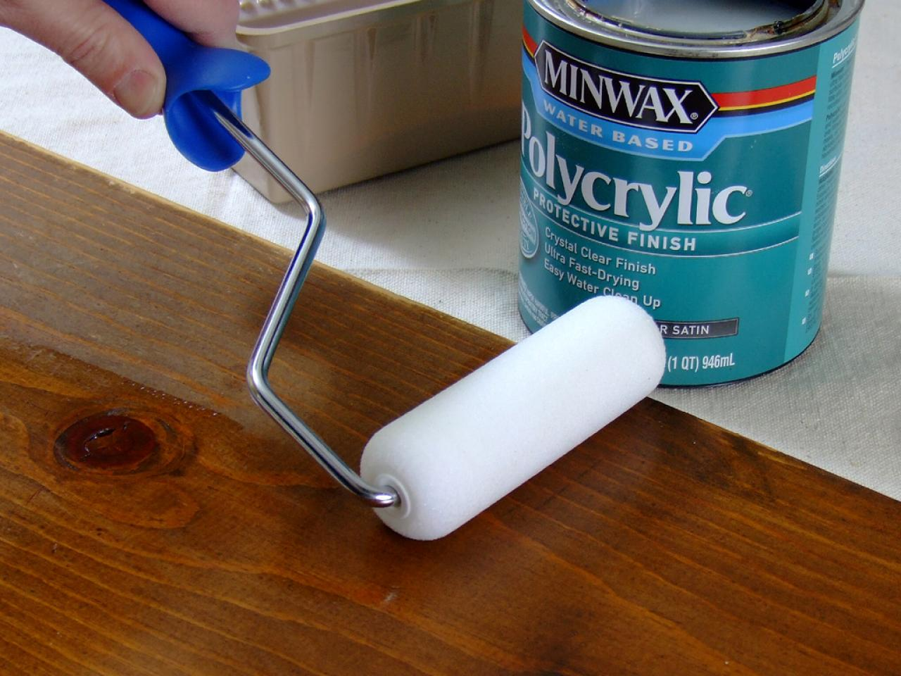

The Importance of Quality Tools

While most homeowners don't need pro tools, they can also take home buyer's remorse when they opt for the lowest-priced models. "What performance are you expecting?" Bohn says. "People get frustrated when they buy a cheap tool, but like old saying goes, you get what you pay for." Likewise, a low-priced version of even a brand name tool will not have the same features, durability, or performance as the same company's higher priced models. It's a bit like buying a TV, then. It's probably a bad idea to buy the cheapest one. Read More...
Keywords: tools BIFL quality frugal power milwaukee makita dewalt hilti
Vacation Home Vibes

Furnishing a vacation rental property is very different from furnishing a home. Your property is basically the equivalent of a hotel room - you need to utilize furniture and decor items that will best stand up to the wear and tear of weekly rental guests. Spending wisely the on appropriate products will get you the most of your money spent.
Take a moment to picture your rental unit. Would you bring your family there and happily pay the asking price? Are you providing your renters with a place they will want to return to? Read More...
Take a moment to picture your rental unit. Would you bring your family there and happily pay the asking price? Are you providing your renters with a place they will want to return to? Read More...
Keywords: vacation home decor beach mountains coast outdoor cabin
5 Tips for Creating a More Peaceful Home

I can’t claim that my home is completely minimalist, but it surely isn’t cluttered, and most people I know would call it a pretty minimalist home.
One recent visitor saw my kitchen and remarked, “I’ve never seen a kitchen that looked so clean, so clear of stuff!” Well, I do my best to keep it clean, but the key is to remove the unnecessary stuff.
For example, on the floor of my kitchen/dining room area are just a few essentials: dining table (clear of any clutter), chairs, some counter stools, a high chair, a step stool for the kids. On the counters are only the toaster, coffee maker and microwave.
Is this kind of minimalist home devoid of character and fun and life? Some might think so, but I get a strange satisfaction, a fulfillment, at looking around and seeing a home free of clutter. It’s calming, and liberating, and just nice. Read More...
One recent visitor saw my kitchen and remarked, “I’ve never seen a kitchen that looked so clean, so clear of stuff!” Well, I do my best to keep it clean, but the key is to remove the unnecessary stuff.
For example, on the floor of my kitchen/dining room area are just a few essentials: dining table (clear of any clutter), chairs, some counter stools, a high chair, a step stool for the kids. On the counters are only the toaster, coffee maker and microwave.
Is this kind of minimalist home devoid of character and fun and life? Some might think so, but I get a strange satisfaction, a fulfillment, at looking around and seeing a home free of clutter. It’s calming, and liberating, and just nice. Read More...
Keywords: declutter peace zen calming less minimal space
Poly, Shellac and Varnish, Oh My!

When you find a piece of wood furniture that needs a little love, it's really tempting to just fork over the cash and take it home as your next pet project. But wait, says woodworking expert Teri Masaschi, author of Foolproof Wood Finishing: For Those Who Love to Build & Hate to Finish. There are some things you need to consider first before you decide to refinish. Read More...
Keywords: stain refinish wood urethane varnish sanding prep